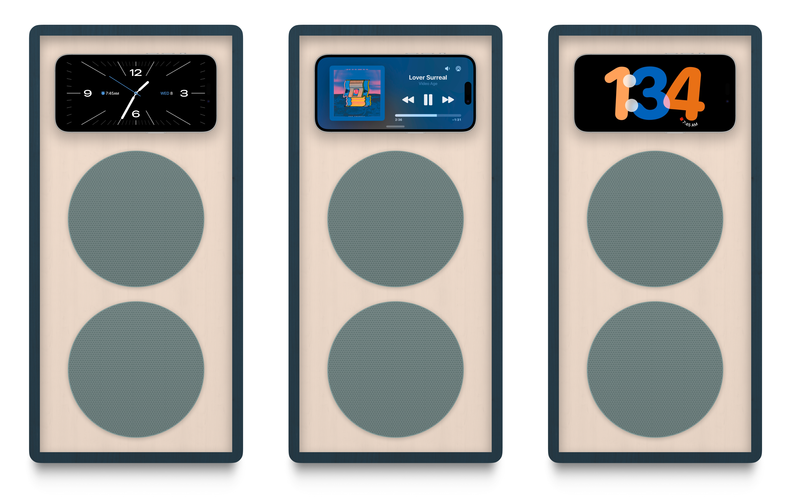

Home
Home
 Work
Work
 About
About
 Audio
Audio
The Raums-2
No bigger than a coffee maker.

Designed to Fit.
Raums-2 brings the same audio visual experience as R-1 to your kitchen, bathroom, or desk. Hear and see recipes on YouTube while cooking. Play music or watch makeup tutorials while getting ready. And give your phone a place to be on your desk.
Made November 2023
Design & Purpose
Introduction
Why smaller? Because space is limited.
R-1 is too large to frequenly move from room to room, and it's far too loud for a bathroom or desk.
R-1 is too large to frequenly move from room to room, and it's far too loud for a bathroom or desk.
Design
Raums-2 builds upon R-1 in material design, but positions iPhone higher, making viewing video and quick interactions with iPhone easier.
It has a steeper viewing angle built in and a form factor designed for mobility.
It has a steeper viewing angle built in and a form factor designed for mobility.
The Kitchen
Hearing recipe instructions over a frying pan is tough.
And repeatedly picking up your phone to squint at subtitles sucks.
R-2 provides a great place to both hear and see instructions or even watch shows while cooking.
And repeatedly picking up your phone to squint at subtitles sucks.
R-2 provides a great place to both hear and see instructions or even watch shows while cooking.
The Bathroom
Bring high quality audio to your bathroom counter.
Watch make-up tutorials at the same height as your face in the mirror.
And turn up the volume to listen so music or podcasts over the shower.
Watch make-up tutorials at the same height as your face in the mirror.
And turn up the volume to listen so music or podcasts over the shower.
The Desk
Raums-2 fits better at your desk at home.
Notifications pop up right at the height of your eyes, but keeps iPhone high enough to keep your hands on your keyboard.
Just set a pomodoro timer and a playlist, and get to work.
Notifications pop up right at the height of your eyes, but keeps iPhone high enough to keep your hands on your keyboard.
Just set a pomodoro timer and a playlist, and get to work.
Raums-2 Prototype Currently Being Constructed
Prototyping Use Cases
The design of R-2 looks visually striking, but it struggles to find a firm use case.
It's existence and purpose is significantly exploratory, helping me learn how to build on a smaller scale and think through use case.
It's existence and purpose is significantly exploratory, helping me learn how to build on a smaller scale and think through use case.
Material
The thickness, or rather thinness, of wood has presents difficulties in construction.
R-2's front plate requires thinner plywood to scale R-1's look down. Thinner plywood is harder to cut precicely, and it makes for a more fragile assembly.
R-2's front plate requires thinner plywood to scale R-1's look down. Thinner plywood is harder to cut precicely, and it makes for a more fragile assembly.